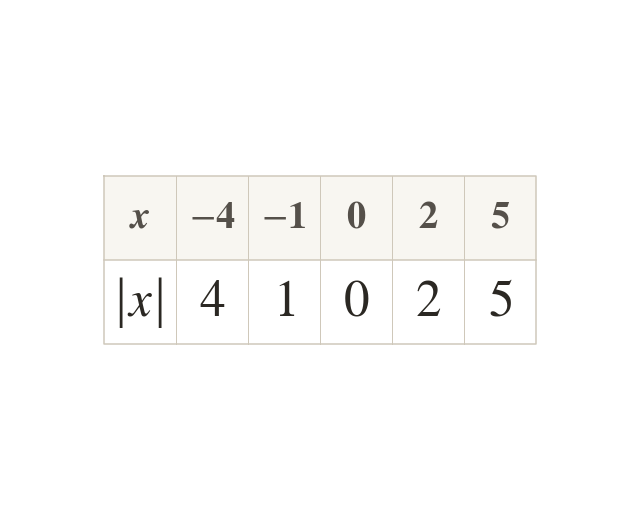
is a size
The modulus of a number is its distance from so it is never negative. and
The modulus measures the size of a number and ignores its sign, so a modulus graph never goes below the x-axis. Today's V-shaped graphs and two-case equations set up the modulus of any function in and the harder modulus equations and inequalities in
Work down the page at your own pace. Write every answer in your book first, then click to check it.
Read each card, then follow the worked examples one step at a time.

The modulus of a number is its distance from so it is never negative. and
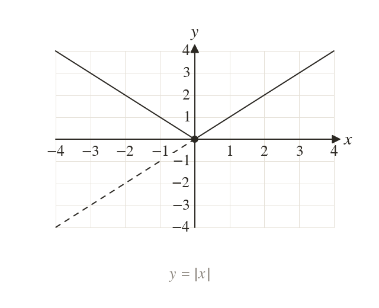
For the graph is For it is the part of below the x-axis reflected in it.
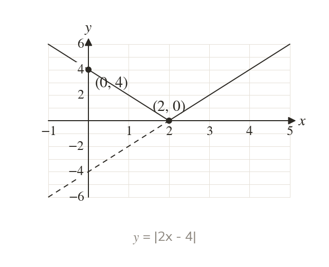
is the line with its part below the x-axis reflected. Its vertex is at so
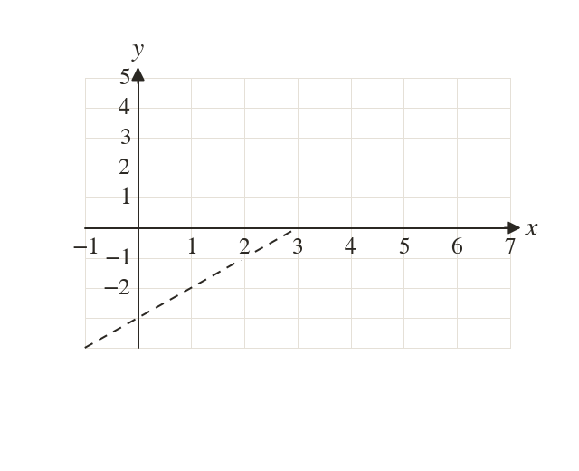
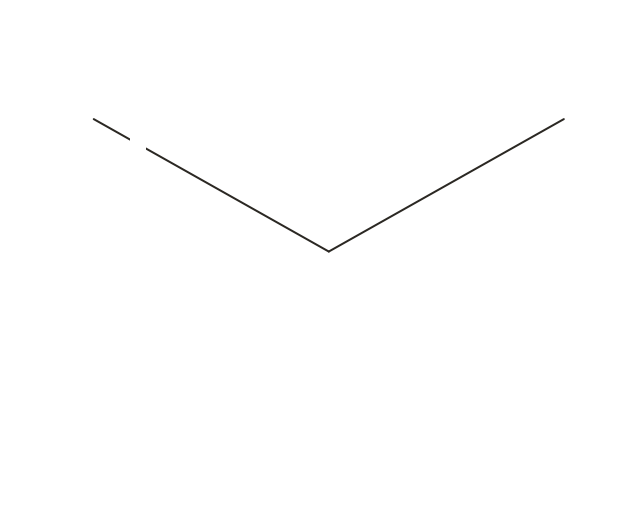
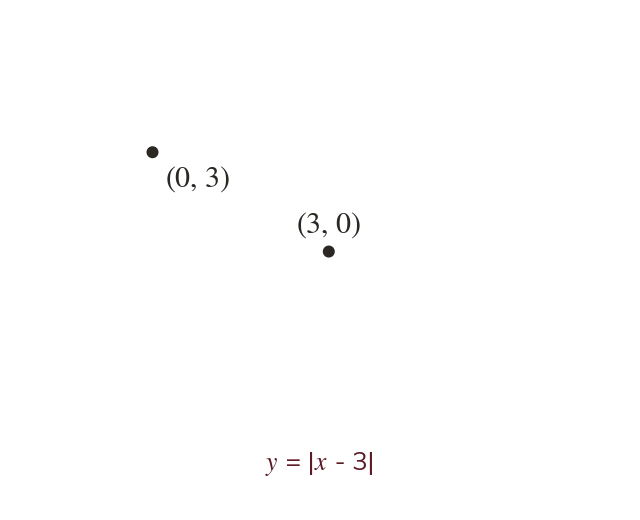
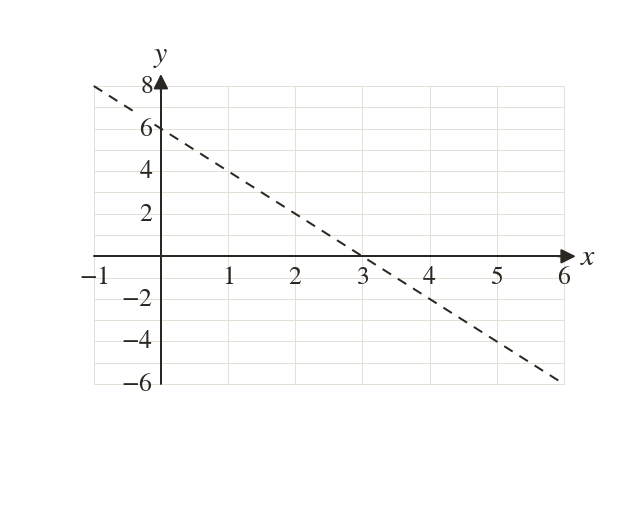
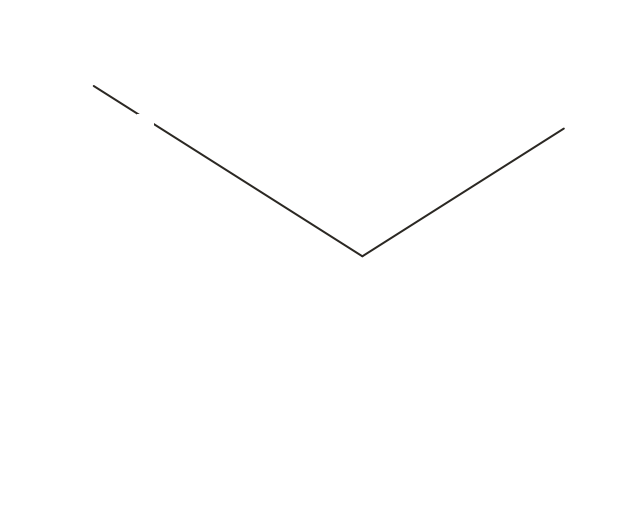
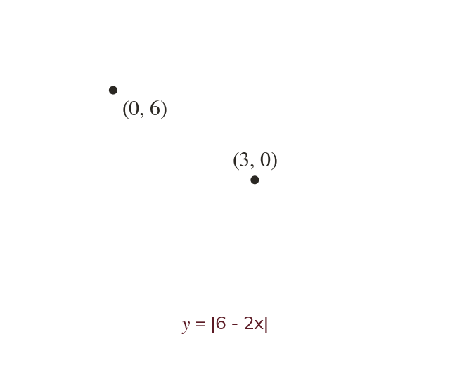
Pick an answer. If it's wrong, the feedback tells you which mistake it was.
Write the blanks in your book first, then tap each one to check.
Read each card, then follow the worked examples one step at a time.
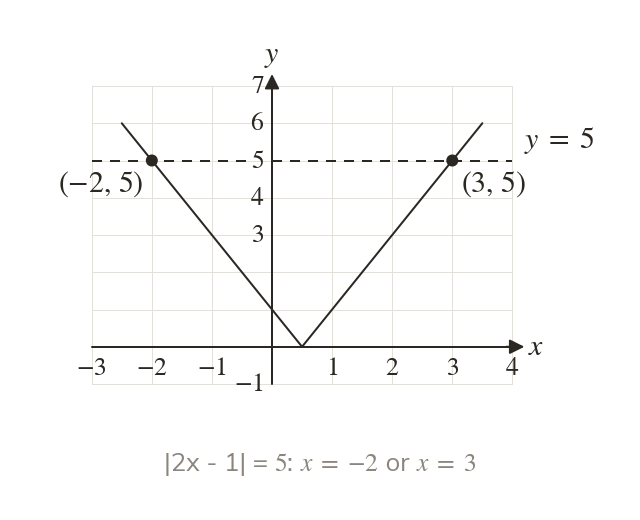
|ax + means ax + or ax + For there are two solutions, where crosses both arms of the V.
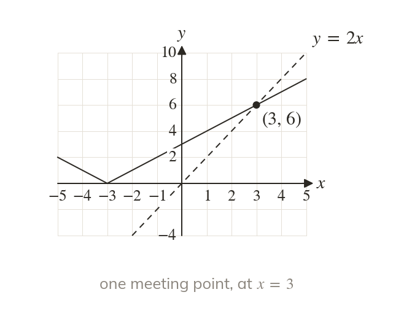
In the right-hand side can be negative, but a modulus cannot. So a case can give a value that does not work.
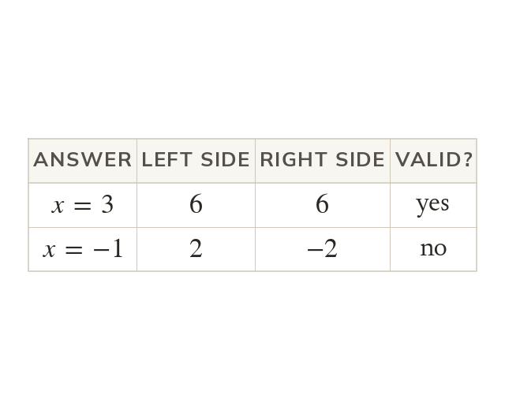
Solving gives and gives
At the right-hand side is so is rejected.
Pick an answer. If it's wrong, the feedback tells you which mistake it was.
Write the blanks in your book first, then tap each one to check.
Finished? Next lesson: P2-2.2a Mappings, Domains and Ranges.
For each skill, tap the one that is true for you today. Your Revise pages start with anything you mark Not yet.
Your ratings are saved on this device only.
Log in, then search for a code to practise that skill.